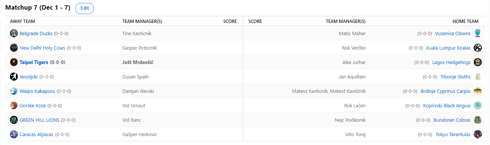

SEZONA 25/26
- Pravila in sistem tekmovanja
- Matchup1 (Oct 21 - Oct 26)
- Matchup2 (Oct 27 - Nov 2)
- Matchup3 (Nov 3 - Nov 9)
- Matchup4 (Nov 10 - Nov 16)
- Matchup5 (Nov 17 - Nov 23)
- Matchup6 (Nov 24 - Nov 30)
- Matchup7 (Dec 1 - Dec 7)
- Matchup8 (Dec 8 - Dec 14)
- Matchup9 (Dec 15 - Dec 21)
- Matchup10 (Dec 22 - Jan 28)
- Matchup11 (Dec 29 - Jan 4)
- Matchup12 (Jan 5 - Jan 11)
- Matchup13 (Jan 12 - Jan 18)
- Matchup14 (Jan 19 - Jan 25)
- Matchup15 (Jan 26 - Feb 1)
- Play-in (Feb 2 - Feb 22)
- Playoff 1 (Feb 23 - Mar 8)
- Playoff 2 (Mar 9 - Mar 22)
- Playoff 3 (Mar 23 - Apr 5)
2025/26 - Fantasy Koroška - sezona 9
MATCHUP 7 (Dec 1 - Dec 7)
Recap: MATCHUP 7
Čaka nas izjemno kaotičen teden, kar se razporeda tiče. Zaradi NBA Cupa bodo tekme nastreljane in jih bo tudi zelo malo.
Še prej pa povzetek, komu je Miklavž prinesel darilo v obliki zmage in komu so vso voljo do igre vzeli Parklji? Stay tuned!
Začnimo kar na vrhu razpredelnice, kjer mali Cicko še naprej ne pozna poraza. Tokrat mu je uspel celo najvišji score sezone zaenkrat – 1474 točk.
S tem je prevzel virtualnih 10€ in pa morebitna 2%, ki ju ta dosežek prinese na koncu rednega dela. V derbiju kroga so si
Shrimpi pokorili Lionse, ki so prav tako bili neporaženi do tega kroga. Enega neposrednega tekmeca je pahnil v zmago zaostanka,
ali lahko isto stori tudi z Vitom?
Slednji je tako kot na Herkonovem pub quizu tudi v Fantasy ligi na drugem mestu. Tokrat je v pravi poslastici z zgolj 14 točkami razlike vendarle nadvladal prav Gašperja.
Velja omeniti dejstvo, da sta se tako Vito kot Nejc pridružila elitni druščini Kavta in Joleta z uvodom v sezono 7-0.
Omenjena managerja sta bila zaustavljena v 8. krogu od Duleta in Urnauta respectively, eden izmed letos najboljših (zaenkrat)
pa bo ta rekord tudi podrl. V težko pričakovanem obračunu se bosta namreč pomerila med sabo in le eden bo ostal neporažen!
No z vrha pa skočimo hitro še na dno razpredelnice. Tam še naprej »kraljuje« Kavt s svojimi Krapi. Propad franšize v slogu Delonteja Westa za tega veleuma
z Brdinj in ali ima izkušeni Mato kakšnega asa v rokavu, da se reši grozne sezone? Tokrat ni imel težkega dela z njim Ilja, ki si
je po slabšem začetku priigral že tretjo zmago in se zelo oddaljil od mest gajbarjev, kjer je preživel večino svoje rookie sezone.
Napredek je očiten.
Boljši (vsaj letos) brat Tatičnik je tokrat preveč slepo sledil zgledu starejšega in v njegovem slogu izgubil svoj matchup. Ni bil sicer daleč od uspeha,
a poraz je poraz in Tinki Binki še naprej drsi po lestvici navzdol. Usoden zanj je bil Maher, ki pa kljub zmagi trepeta ob čakanju
na novice o poškodbi Franza Wagnerja. Najbrž mu je zdaj že žal, da ni sprejel kakšne izmed ponudb, ki mu jih ni manjkalo v preteklih dneh.
Zmago bi z veseljem zamenjal za poraz, če bi to pomenilo zdravje njegovega najljubšega Švaba, a tako to žal ne gre in rezultati
MRI-ja bi utegnili prisoliti močno klofuto Kiviju.
Ko smo ravno pri osmoljencih in poškodbah … Za našega Vokija nobena ovira ni previsoka, razen gasilska miza. Kazen bo vzgojna za tega kengurujčka z Ozar,
kajti ski opening brez salt in skokov bo najbrž zanj kar dolgočasen. Upamo, da poškodba ne preprečuje klikanja na »SPIN« tipko,
a to najbrž ne bi smel biti problem. Je pa vsaj ugnal Gorske Koze in se pozicioniral ne izjemno visoko 4. mesto na lestvici.
Tako visoko ni bil že vse od BYE sezone. Poskušal je sicer MPJ, a brez Bookerja žal ne gre in Vid Urnaut je trenutno v slabi
seriji treh zaporednih porazov, ki jo bo poskušal prekiniti na gostovanju v Trbonjah. Baje je to še zadnja priložnost za njegove
Koze, preden se vrne na Japonsko, kjer je bil neporažen. Je pa Vid v tem tednu uspešno organiziral velik plezalni dogodek in
morda mu je to vzelo nekaj preveč časa in se zdaj lahko ponovno stoodstotno posveti svojemu fantasy moštvu.
Tudi sveta krava zrno najde, ali kako že gre tisti tradicionalni pregovor. Kdo bi si mislil, da se bo 0-6 moštvo tako sprehodilo do prve zmage, a ko ti
nasproti stoji Verčko je pač tako. S tem je Gašper splezal iz rdeče cone, kjer ga je zamenjal Dule. Lahko uprizori serijo zmag,
ali pa je to bil zgolj enotedenski preblisk? Verčko se najbrž ne sekira pretirano, s toliko hospitaliziranimi košarkarji resnih
možnosti seveda ni imel in k sreči ima na kontu že 3 zmage, da so gajbarsko-avspuharska mesta oddaljena dovolj, da še ni razloga za preplah.
Že v ponedeljek pa je z neverjetnim večerom svoj matchup odločil Aleks. 354 točk, kar je po neuradnih podatkih celo trenutni daily rekord sezone, je bilo dovolj
da so zdesetkani Tigri takoj pomahali z belo zastavo in se posvetili naslednjemu matchupu. Kljub neverjetnemu Jalenu Johnsonu niso
imeli tako rekoč nobenih možnosti in še naprej ne najdejo prave forme. Se je pa Jole svojemu tokratnemu nasprotniku vsaj oddolžil
na drugih področjih, sladka zmaga za pol točke v pub quizu je vsekakor dober obliž na rane, gospod Mitologija pa bo moral še pojesti
nekaj žgancev in enciklopedij, da bo lahko na tem področju konkuriral LM-ju.
Ostal nam je le še največji blowout … 437 točk razlike je na koncu kazal semafor v korist Kupsa, ki s svojimi Lenivci prihaja ponovno na sredino lestvice.
Kaj bi šele bilo, da ne bi imel na rosterju Ziona. Tokrat so padli Vesoljčki. Nekdaj strah in trepet NBA FK, Dule, je zdaj zdrsnil
že celo v rdečo cono. V svoji 8-letni zgodovini je Dule 1x gajbo na piknik sicer že nosil, a se je tedaj zaobljubil, da je to prvič in zadnjič.
Se je lagal in je čas za novo? Časa ima še dovolj, a večina ekip zdaj beži že za dve zmagi. Dobra novica za Dušana je ta, da mora premagati
zgolj eno drugo moštvo, kajti kdo bo zadnji mislim, da se že ve.
Kaj nas čaka ta teden? Kot smo že omenili, totalen kaos v razporedu zavoljo NBA Cupa in bolj coin-flip tedna v tej szoni več ne bo. Najavili smo že derbi vodilnih,
Cicko vs Vito. Kavt bo moral na prvo zmago najbrž še nekoliko počakati, vsi ostali obračuni pa bi utegnili sicer biti zanimivi,
a poimensko noben ne izstopa preveč. Srečno vsem in ne pozabite na predictione.